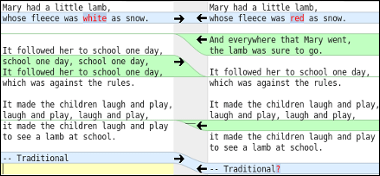

James Madison University, Spring 2018 Semester
Lab05: Testing via command line
Background
Throughout the semester, you will learn many techniques for testing your programs. In the next programming assignment, you will be required to compare differences between your output and the solution's output. They should match 100%, otherwise you either have incorrect formatting (e.g., missing or extra whitespace, misspelled words) or incorrect results (e.g., computing the wrong values). The good news is that you can automate the process of comparing expected output with actual output using the command line.
Objectives

Check out meldmerge.org
Perform integer division and modulus.
Display output with specific formatting.
Compile and run from the command line.
Redirect input and output using text files.
Key Terms
importstatement- bring in classes from Java's standard library
- division (
/) - integer operation that produces the quotient
- modulus (
%) - integer operation that produces the remainder
Part 1: Preparation
Develop (on paper) an algorithm for converting a total number of seconds into hours, minutes, and seconds. For example:
| Input | Output | ||
|---|---|---|---|
| Total Seconds | Hours | Minutes | Seconds |
| 5000 | 1 | 23 | 20 |
| 3625 | 1 | 0 | 25 |
| 1000 | 0 | 16 | 40 |
Before writing any code, think about solving this problem in general. Make sure you know how to do this task on paper! Only then can you describe the process algorithmically. Be sure to indicate the names of all variables, and list all required steps in the conversion.
Part 2: Implementation
Create a new program Seconds.java (note the capital S) in DrJava with the following structure.
- Write a one-sentence documentation comment about your class, along with @author and @version tags.
- Remove unnecessary comments like "Auto Generated Java Class" and "ADD YOUR CODE HERE."
- Add an
importstatement at the top of the file to make Scanner available to your program. - Add all required variable declarations at the start of the main method.
- Declare and initialize a Scanner variable after the other declarations.
- Display the prompt
"Enter the number of seconds: "exactly as shown. - Use the print method (rather than println) so that the cursor remains on the same line as the prompt.
- Calculate the equivalent hours, minutes, and seconds using your algorithm from Part 1.
- Finally, output the result. The format must be exactly as shown, including whitespace:
(blank line) _____ seconds = _____ hours, _____ minutes, and _____ seconds (blank line)
For example:1000 seconds = 0 hours, 16 minutes, and 40 seconds
- Test your program with several input values, and make adjustments if the results are not correct.
Make sure to put spaces around each of the values. There should be exactly
one space between elements on the output line, and no leading or trailing spaces.
Be sure to include the right number of blank lines in the output (use the newline
character \n if needed). Incorrect spacing or anything other than three
lines of output (each with one newline character at the end) will cause the
output to be flagged as incorrect.
Part 3: Command Line
One of the most powerful and useful skills you will learn in this course is how to use the command-line interface or "Terminal" for short. Today we will learn the commands for compiling and running Java applications so that we can automate the input and capture the output.
- Locate your .java and .class files for today's lab using the file manager.
- Right-click the open space around your files (i.e., the folder containing your files).
- Select "Open in Terminal" from the context menu. Welcome to the command line!
- Enter the command
javac Seconds.java(javac means "java compiler"). - If it fails to compile, javac will print out the usual compiler error messages.
- Enter the command
java Seconds(java means "java virtual machine").
Note that javac requires a file name, whereas the java command requires a class name.
- Download the file test.in and look at the file contents.
- Enter the command
java Seconds < test.inand see what happens. - Enter the command
java Seconds < test.in > test.outand see what happens. - You should now have a file named test.out in that same directory. What is in the file?
The < and > command-line operators redirect
standard input and output using plain text files. This technique is useful for
saving yourself a lot of typing when testing your programs!
Part 4: Diff Testing
Once you have captured the actual output of a program, you should compare it with the expected output. We will use Meld, a visual diff and merge tool that runs on Linux.
- Download the file test.exp and look at the file contents.
- Enter the command
meld test.exp test.outto compare the two files. - If there are no differences, congratulations on getting your program right the first time!
(But go back and make a mistake in your Java code to see how this part of the lab works.) - Based on the differences between the expected output and your actual output, figure out what needs to be changed in your code.
- Edit and re-compile your code using DrJava. Then run it from the command line using test.in and test.out, and run meld again.
- Repeat the previous step until your solution matches 100%. Then submit your Seconds.java file via Canvas.
You may design your own test cases by editing the test.in and test.exp files, or by creating new files (e.g., test2.in and test2.exp). The more test cases you have, the more confident you can be about your solution.
NOTE: If you are running Windows, there are similar free tools like WinMerge and KDIff3 that you may install. Or if you have a Mac, you can download Meld for OSX. After installing it, run this command from the Terminal to make the app visible to the Terminal:
sudo ln -s /Applications/Meld.app/Content/MacOS/Meld /usr/local/bin/meld